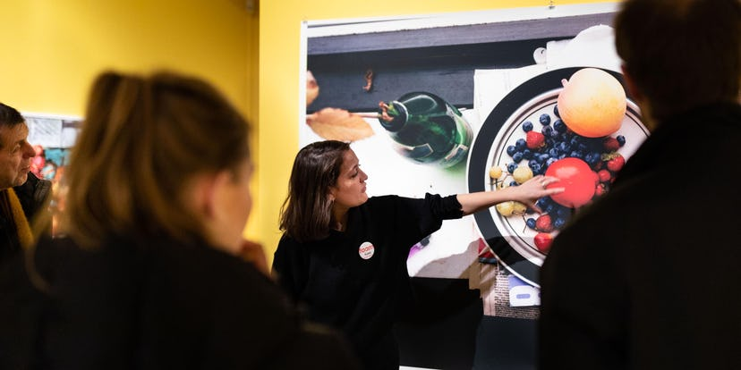

Shigeru Onishi
The Possibility of Existence
tentoonstelling bij Foam
t/m 9 Januari 2022

tentoonstelling bij Foam
t/m 9 Feb 2022

tentoonstelling bij Foam
t/m 9 Januari 2022
tentoonstelling bij Foam
t/m 9 Jan 2022

tentoonstelling bij Foam
t/m 9 Februari 2022

tour
t/m 22 Oct 2022
